De onderdelenbalk staat links op het paneel. Je kiest er een onderdeel en zet het daarna met een klik op het paneel.
De onderdelen zijn in drie groepen verdeeld, van links naar rechts in een schakeling: invoer → verwerking → uitvoer.
| Knop | Naam | Wat doet het? |
|---|---|---|
| Verbinding | Zet de draadmodus aan of uit. Zie Verbindingen. |
| Knop | Naam | Wat is het? |
|---|---|---|
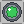 | Drukknop | Geeft een signaal zolang je hem indrukt. |
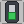 | Schakelaar | Blijft aan of uit tot je opnieuw klikt. |
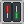 | Dipschakelaar | Getal van 0 tot 15 instellen en met een knop versturen. |
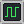 | Impulsgenerator | Geeft regelmatig een puls. |
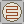 | Lichtsensor | Reageert op licht. |
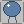 | Warmtesensor | Reageert op warmte. |
| Knop | Naam | Wat is het? |
|---|---|---|
 | EN-poort | Uitgang aan als alle ingangen aan zijn. |
 | OF-poort | Uitgang aan als minstens één ingang aan is. |
 | NIET-poort | Keert het signaal om. |
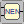 | NEN-poort | Uitgang uit als beide ingangen aan zijn. |
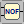 | NOF-poort | Uitgang aan als beide ingangen uit zijn. |
 | EX-OF-poort | Uitgang aan als precies één ingang aan is. |
 | Tellerblok | Telt pulsen en geeft de stand binair door. |
 | Flipflop | Onthoudt één bit (SR, D, JK of T). |
 | Stappenteller | Telt pulsen tot 9999 en toont de stand op een display. |
 | Stopwatch | Meet de tijd (MM:SS) zolang S aan is; Q gaat aan bij de eindtijd. |
 | Geheugenblok | Geeft de inhoud van een gekozen geheugenplaats door. |
| Knop | Naam | Wat is het? |
|---|---|---|
| Lamp | Brandt als de ingang aan is. | |
| Relais | Toont hoe een contact omschakelt als de spoel bekrachtigd wordt. | |
 | Zoemer | Gaat af als de ingang aan is. |
| Motor | Draait linksom (ingang L) of rechtsom (ingang R). | |
| 7-segmentdisplay | Toont een cijfer of letter. | |
 | Voltmeter | Toont de spanning, bijvoorbeeld 3,3 V. |
 | Milliampèremeter | Toont de stroom in mA; alleen te zien als de knoppen van de voeding aan staan. |
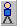 | Persoon | Loopt naar links (ingang L) of rechts (ingang R); eindschakelaars S1 en S2 melden waar hij staat. |
| Wagentje | Rijdt vooruit (ingang V) of achteruit (ingang A) over een kronkelweg; Start, Finish en Tel (een puls bij elk paaltje) melden waar het is. | |
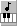 | Muziekdoos | Klavier met 8 pianotoetsen (do tot do'), een ingang per toets: aan is de toets oplichten en de noot laten klinken. |
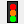 | Verkeerslicht | Verkeerslicht voor auto's (rood, oranje, groen) met een voetgangerslicht; vijf ingangen, zoals UIT0 tot UIT4 van LogicRun. |
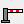 | Slagboom | Slagboom van een parking; ingang O opent de boom, eindschakelaars Dicht en Open. |
| Knop | Naam | Wat is het? |
|---|---|---|
 | + rail | Voedingsrail voor de invoer; de spanning komt van de bron. |
 | − rail | Massarail (0 V) voor de uitvoer. |
 | Bron (accu) | Spanningsbron van 0 tot 12 V met schuifregelaar. |
 | Zekering | Smelt als er te veel stroom loopt. |
 | Weerstand (contact) | Contact of draad met een kleine weerstand: spanningsval U = I × R. |